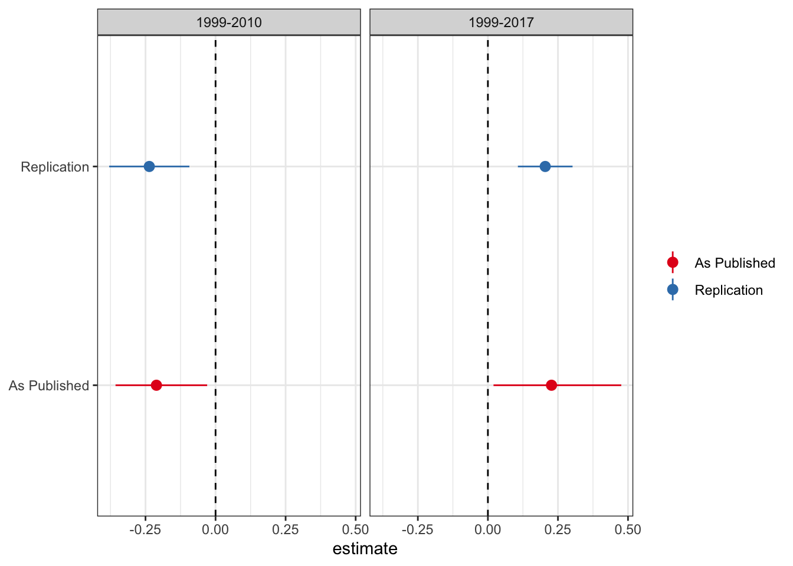
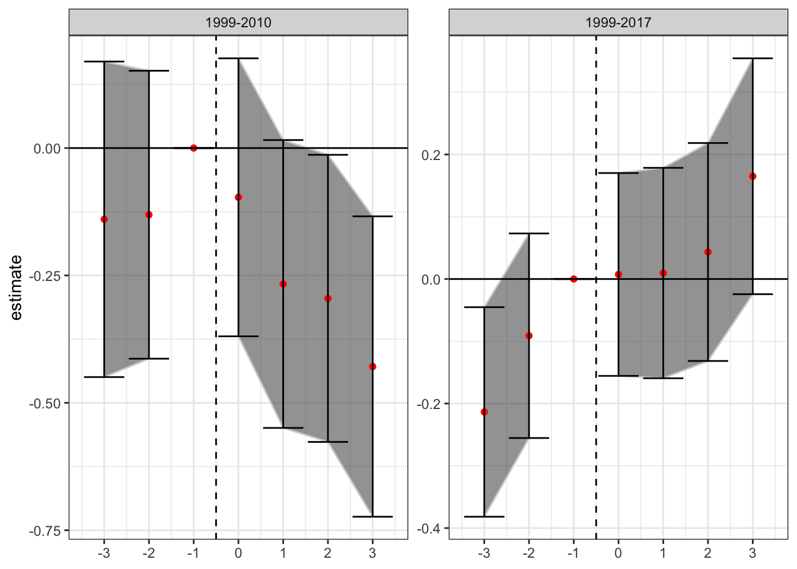
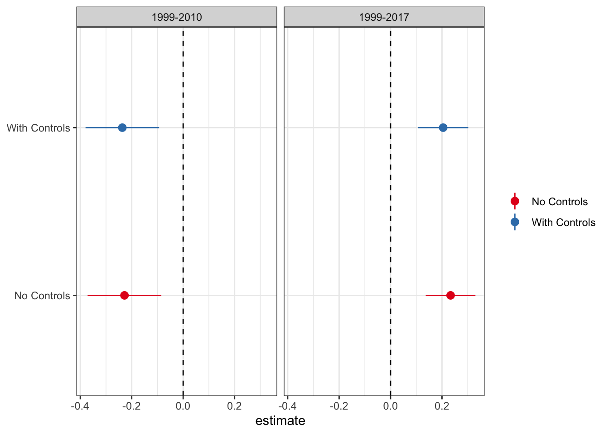
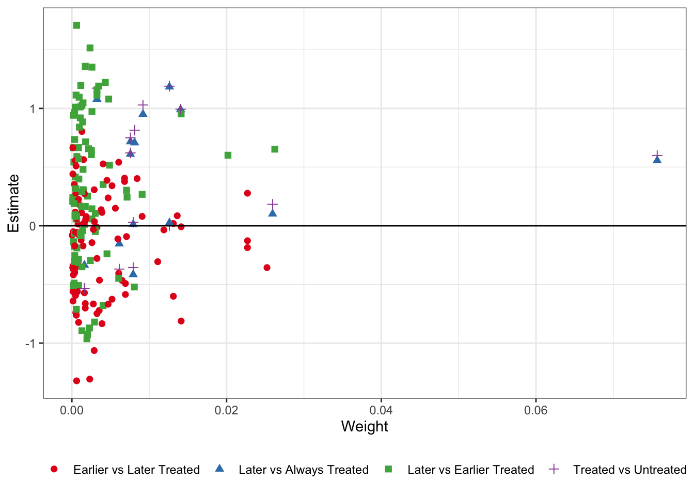
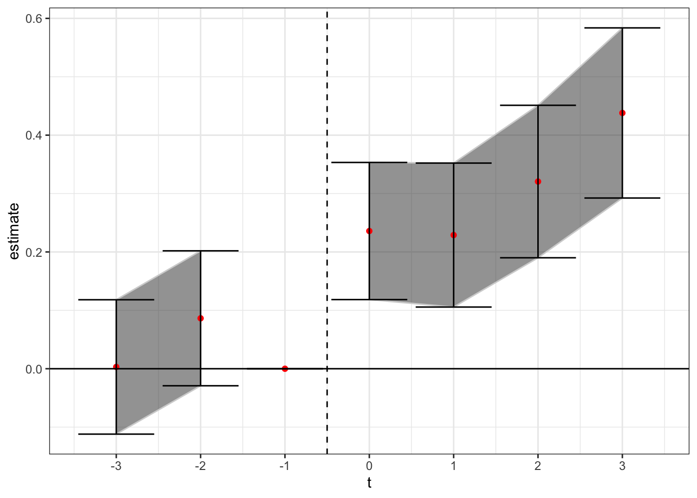
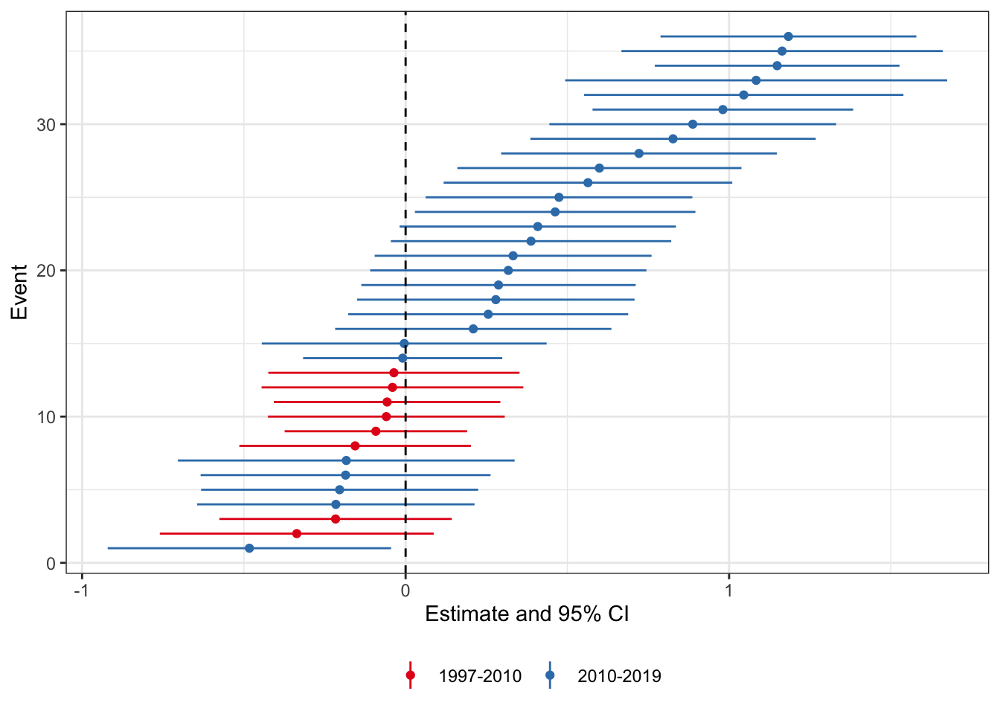
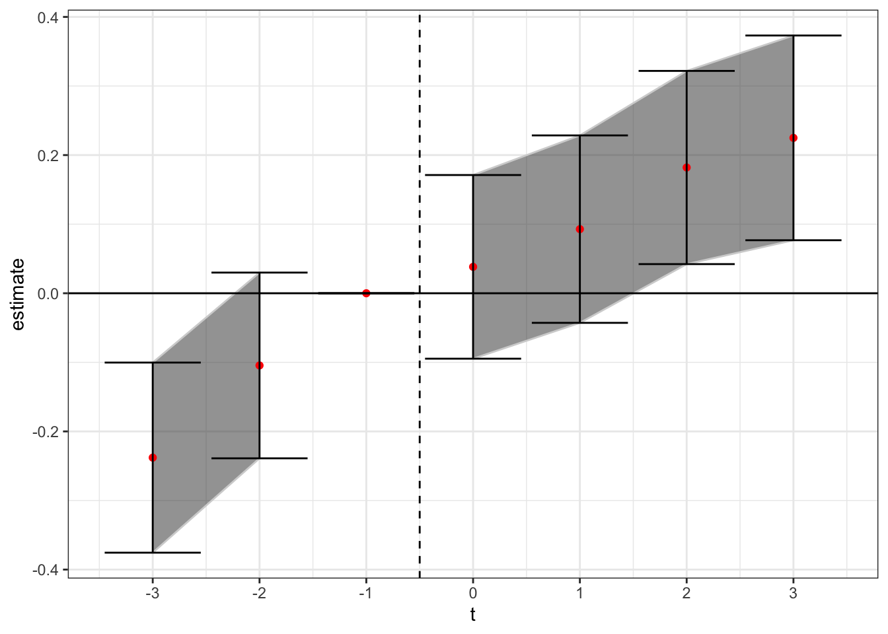
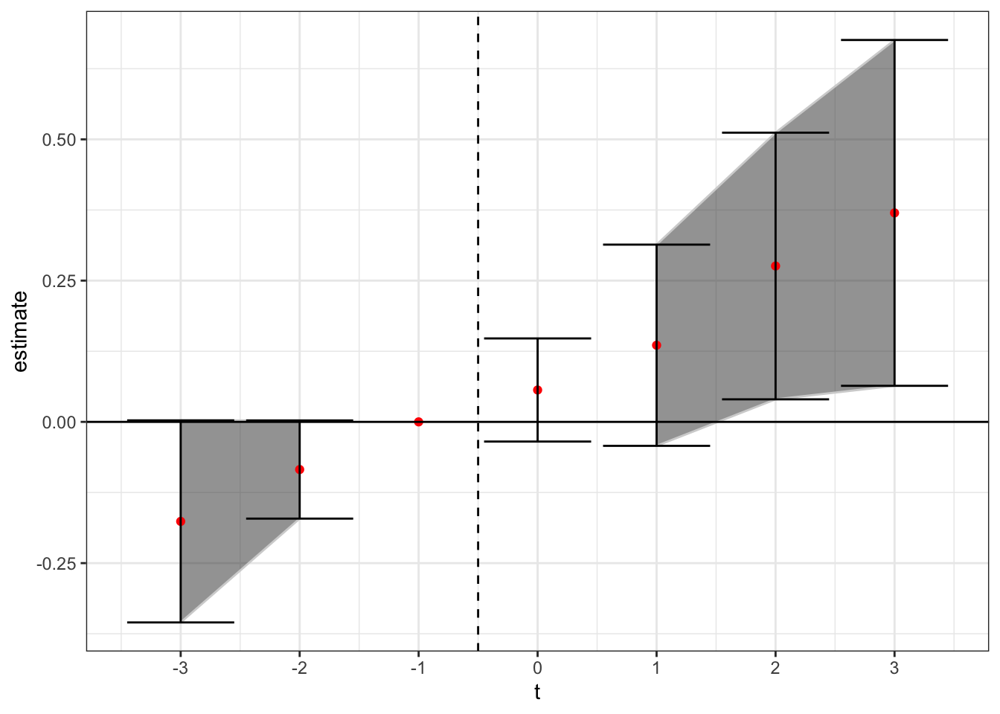
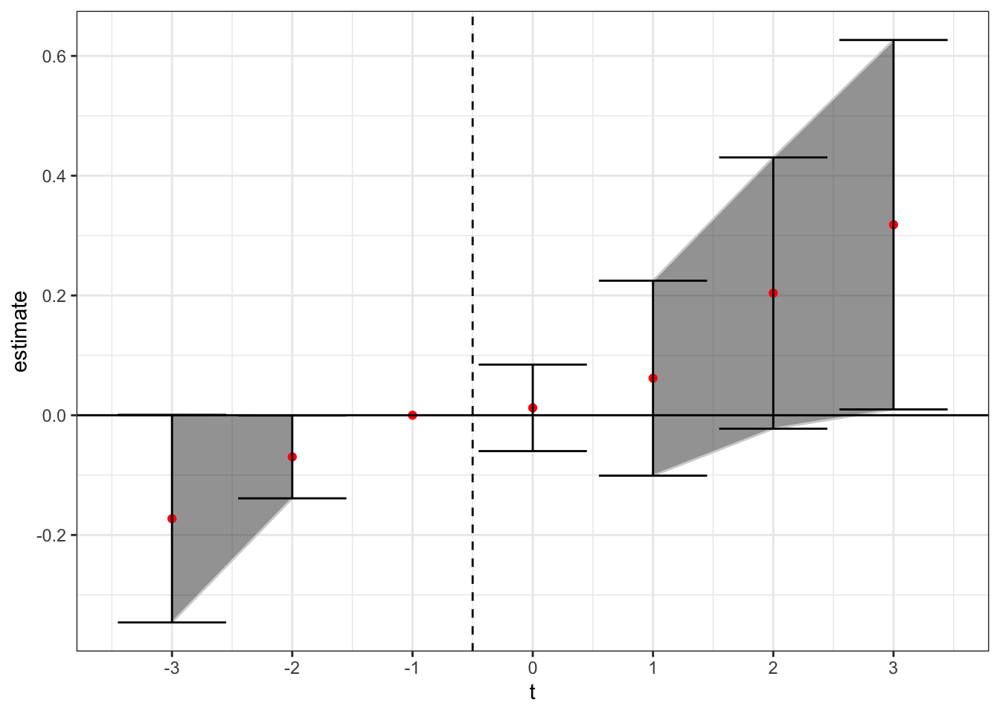
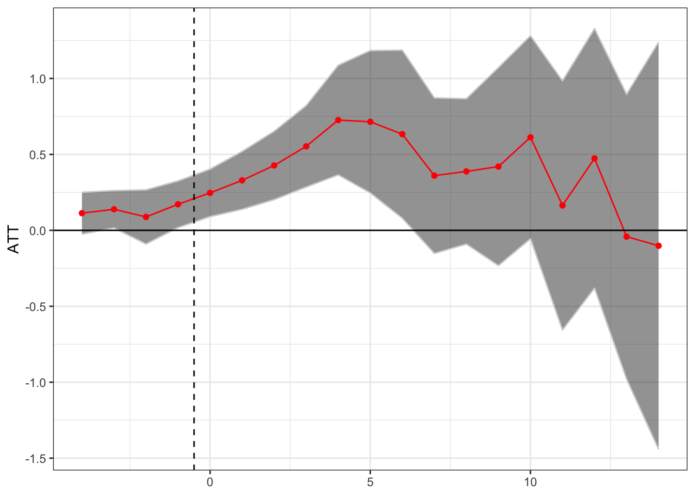

What Can We Say About Medical Marijuana and Opioid Overdose Mortality?
Blogpost documenting the sensitivity of estimates of the effect of medical marijuana legalization on opioid mortality.
Author
Affiliation
Andrew C. Baker
Berkeley Law School
Published
June 13, 2020
Introduction
In this post I expand on the implications of recent econometric work on issues with difference-in-difference (DiD) designs with staggered treatment rollout. For a longer discussion of these issues, and the details of new proposed modifications to the standard two-way fixed effect regression-based DiD models, refer to my prior post here. Here I will demonstrate the practical importance of correcting for these issues with staggered DiD on a live policy issue - whether the adoption of legalized medical cannabis laws has a causal effect on opioid overdose mortality.
The potential beneficial impact of legal medical marijuana has been debated since \(\color{blue}{\text{Bachhuber et al. 2014}}\). Using a staggered DiD design \(\color{blue}{\text{Bachhuber et al. 2014}}\) found that states with medical cannabis laws experienced a slower increase in opioid overdose mortality over the period 1999-2010. Given the recent opioid epidemic, and the accompanying increase in “deaths of despair” around the country, this result generated substantial academic and popular attention. At the time of this writing, the paper has been cited over 500 times since publication.
New PNAS Paper
A recent paper published in PNAS by Chelsea L. Shover, Corey S. Davis, Sanford C. Gordon, and Keith Humphreys calls into question the robustness of the association between medical marijuana and opioid overdose mortality. The authors extend the sample from 2010 to 2017, a period during which 32 additional states adopted medical marijuana laws. The authors find that not only did the prior negative association disappear (i.e. medical marijuana laws are associated with lower opioid overdose death rates), but in fact the sign flipped, and now medical marijuana laws are associated with higher opioid overdose death rates. The authors are careful to not claim that they believe medical marijuana leads to higher overdose rates, but rather that they “find it unlikely that medical cannabis—used by about 2.5% of the US population—has exerted large conflicting effects on opioid overdose mortality. A more plausible interpretation is that this association is spurious.”
I think we can all agree that a little humility in concluding causal effects from observational data is good practice. However, this paper raises the question (not begs, raises) of whether the change in coefficients between the two time periods is in fact driven by the issues with staggered DiD - namely using prior treated states as controls in for future treated states, therefore biasing the treatment effect estimates, as shown in \(\color{blue}{\text{Goodman-Bacon 2019}}\). Although the authors don’t call their analysis a difference-in-differences design, it is by construction. The authors include year and state fixed effects, and estimate the effect of medical marijuana laws using the coefficient on the treatment indicator for states having adopted such a law. The analysis below will show the sensitivity of the new results to the vagueries of TWFE OLS DiD designs, and hopefully (with the provided code) offer a roadmap for other researchers who want to implement the new designs into their analysis flow.
Replication
As good stewards of open science, PNAS provides the data in this study here. As a first pass analysis I will attempt to replicate the main DiD results (Table 1) from the new paper. While I don’t match the coefficients exactly, the results are pretty close. I plot the estimate and 95% confidence interval from the paper and my replication for the treatment variable (medical cannabis law) below.
Code
# load packageslibrary(tidyverse)library(lfe)library(bacondecomp)library(MCPanel)library(kableExtra)library(multcomp)library(did)library(gsynth)library(panelView)select <- dplyr::select# read in datadata <-read_csv("pnas.csv")# make things prettytheme_set(theme_bw())# make formula to run regression model_formula <-as.formula("ln_age_mort_rate ~ Medical_Cannabis_Law + rxdmp_original + rxid_original + pmlaw_original + unemployment | state + Year | 0 | 0")# run the regression separately for 1999-2010 and full data thru 2017# bind two different datasets, one filteredbind_rows( data %>%mutate(df ="1999-2017"), data %>%filter(Year <=2010) %>%mutate(df ="1999-2010")) %>%# run the models by datasetgroup_by(df) %>%do(broom::tidy(felm(ln_age_mort_rate ~ Medical_Cannabis_Law + rxdmp_original + rxid_original + pmlaw_original + unemployment | state + Year |0|0, data = ., exactDOF =TRUE, cmethod ="reghdfe"), conf.int =TRUE)) %>%# keep just the variables we are going to plotfilter(term =="Medical_Cannabis_Law") %>%# keep just the variables we needselect(df, estimate, conf.low, conf.high) %>%# column for replicationmutate(type ="Replication") %>%# bring in published estimatesbind_rows(tibble(df =c("1999-2017", "1999-2010"),estimate =c(.227, -.211), conf.low =c(.02, -.357),conf.high =c(.476, -.03),type =rep("As Published", 2) )) %>%# plot differencesggplot() +geom_pointrange(aes(x = type, y = estimate, ymin = conf.low, ymax = conf.high,group = type, color = type)) +geom_hline(yintercept =0, linetype ='dashed') +theme(legend.title =element_blank(),axis.title.y =element_blank()) +scale_colour_brewer(palette ='Set1') +coord_flip() +facet_wrap(~df)

So we’re pretty close to matching. The point estimates are close to spot on, while the confidence interval changes a little. Not sure whether they use clustered standard errors (because they do not mention it I omit clustering here, although inferences remain the same if you cluster by state). Regardless, it doesn’t make any difference for inference.
In addition, I will plot the state law changes so we can see how the identification is working with the staggered rollout.
Next, let’s check the event study plots by date range - ideally we would want to see a lack of significant coefficients on indicators for years preceding enactment of the laws, with any significance on the binary treatment indicator being driven by post-enactment differences. This is an analog to the parallel trends assumption of DiD (although it is neither necessary nor sufficient to have insignificant values for the prior indicators, convention is convention).
To estimate these “event-study” DiDs we replace the binary indicator variable for the presence of a medical cannabis law with a series of lead/lag indicators \(\gamma_k\) for being \(k\) years away from treatment. For purposes of this analysis I will focus on the window from three years prior to treatment to three years afterwards. In addition to including indicators \(\gamma_k\) for \(k \in {-3, 3}\), I also saturate the model with indicators for years less than 3 years before treatment, and more than three years after treatment. I exclude the indicator on \(\gamma_{-1}\) to avoid collinearity issues; all coefficient estimates are the difference in relation to year t - 1, or the year before the law change. I include the same controls as the PNAS paper (“annual state unemployment rate and presence of the following: prescription drug monitoring program, pain management clinic oversight laws, and law requiring or allowing pharmacists to request patient identification”). The new estimation equation becomes:
where \(\mu_i\) and \(\mu_t\) are state and year fixed effects respectively, \(\gamma_k\) are the relevant time period indicators, and \(X_{it}\) is a matrix of state-year covariates. The event-study DiD estimates for the two relevant time periods (1999-2010, and 1999-2017) are presented below.
Code
# get number of states that adopted laws in a given yearadopt_years <- data %>%group_by(state) %>%mutate(adopt =ifelse(Medical_Cannabis_Law >0&lag(Medical_Cannabis_Law) ==0, 1, 0)) %>%filter(adopt ==1) %>%select(state, Year) %>%rename(adopt_year = Year)# merge in adopt years to datadata <- data %>%left_join(., adopt_years)# first do event study # get a data_2010 dataset that doesn't have any adoptions after 2010data_2010 <- data %>%filter(Year <=2010) %>%# drop adopt_year if after 2010 %>% mutate(adopt_year =ifelse(adopt_year >2010, NA, adopt_year))# for both datasets create a lead/lag indicatorsdata <- data %>%# variable with relative yearmutate(rel_year = Year - adopt_year,leadlag =case_when( rel_year <-3~"Pre", rel_year ==-3~"lag_3", rel_year ==-2~"lag_2", rel_year ==-1~"lag_1", rel_year ==0~"date_0", rel_year ==1~"lead_1", rel_year ==2~"lead_2", rel_year ==3~"lead_3", rel_year >3~"Post",is.na(rel_year) ~"Missing", ),leadlag2 = leadlag) %>%# turn them into indicator variablesmutate(val =1) %>%pivot_wider(names_from ="leadlag2", values_from ="val", values_fill =list(val =0))data_2010 <- data_2010 %>%# variable with relative yearmutate(rel_year = Year - adopt_year,leadlag =case_when( rel_year <-3~"Pre", rel_year ==-3~"lag_3", rel_year ==-2~"lag_2", rel_year ==-1~"lag_1", rel_year ==0~"date_0", rel_year ==1~"lead_1", rel_year ==2~"lead_2", rel_year ==3~"lead_3", rel_year >3~"Post",is.na(rel_year) ~"Missing", ),leadlag2 = leadlag) %>%# turn them into indicator variablesmutate(val =1) %>%pivot_wider(names_from ="leadlag2", values_from ="val", values_fill =list(val =0))# plot the two sets of DiD estimates# all covariates for lead/lagscovariates <-c("Pre", "lag_3", "lag_2", "date_0", "lead_1", "lead_2", "lead_3", "Post")# isolate the variables that we want to plotcovariates_interest <-c("lag_3", "lag_2", "date_0", "lead_1", "lead_2", "lead_3")# put in the model formulamodel_formula_es <-as.formula(paste("ln_age_mort_rate ~ rxdmp_original + rxid_original + pmlaw_original + unemployment + ", paste(covariates, collapse =" + "),"| state + Year | 0 | 0 "))# combine datasets and run two models for pre and post bind_rows(data %>%mutate(df ="1999-2017"), data_2010 %>%mutate(df ="1999-2010")) %>%# run the models by datasetgroup_by(df) %>%do(broom::tidy(felm(model_formula_es, data = ., exactDOF =TRUE, cmethod ="reghdfe"), conf.int =TRUE)) %>%# keep just the variables we are going to plotfilter(term %in% covariates_interest) %>%# reformat d datagroup_by(df) %>%mutate(t =c(-3:-2, 0:3)) %>%select(df, t, estimate, conf.low, conf.high) %>%# add in data for year -1bind_rows(tibble(df =c("1999-2017", "1999-2010"), t =rep(-1, 2), estimate =rep(0, 2), conf.low =rep(0, 2), conf.high =rep(0,2) )) %>%# split the error bands by pre-postmutate(band_groups =case_when( t <-1~"Pre", t >=0~"Post", t ==-1~"" )) %>%# plotggplot(aes(x = t, y = estimate)) +geom_ribbon(aes(ymin = conf.low, ymax = conf.high, group = band_groups), color ="lightgrey", alpha =1/2) +geom_point(color ="red") +geom_errorbar(aes(ymin = conf.low, ymax = conf.high)) +geom_hline(yintercept =0) +geom_vline(xintercept =-0.5, linetype ="dashed") +scale_x_continuous(breaks =-5:5) +theme(axis.title.x =element_blank()) +facet_wrap(~df, scales ="free_y")

There is little evidence of pre-trends in the data when estimated over data from 1999-2010 (although there is an increase in the year before enactment), while there is some evidence that the trend in increasing mortality rates from opioid overdoses using the full sample (1999-2017) begins before enactment. This could be a violation of the parallel trends assumption, or it could be an artifact of the staggered issues with DiD. Because 32 states adopted such laws in the period from 2010-2017, in addition to the 9 states that had already adopted by 2010, much of the identification is occurring with prior treated units being used as controls. The following analyses will attempt to tease out this bias from the estimates.
Dropping Covariates
As mentioned above, the authors control for covariates that could drive changes in opioid-related mortality rates, including the state unemployment rate and indicators for other drug control related laws. As they note, in neither of the time periods do any of the covariates load significantly. Because some of the DiD derivations flow through better without the inclusion of covariates, let’s plot the difference in the DiD estimates with and without controls.
Code
# make formula to run regression model_formula_nocontrols <-as.formula("ln_age_mort_rate ~ Medical_Cannabis_Law | state + Year | 0 | 0")# run the regression separately for 1999-2010 and full data thru 2017 with controlswithcontrols <-bind_rows( data %>%mutate(df ="1999-2017"), data %>%filter(Year <=2010) %>%mutate(df ="1999-2010")) %>%# run the models by datasetgroup_by(df) %>%do(broom::tidy(felm(model_formula, data = ., exactDOF =TRUE, cmethod ="reghdfe"), conf.int =TRUE)) %>%# keep just the variables we are going to plotfilter(term =="Medical_Cannabis_Law") %>%# keep just the variables we needselect(df, estimate, conf.low, conf.high) %>%# column for replicationmutate(type ="With Controls")# re-run without controlsnocontrols <-bind_rows( data %>%mutate(df ="1999-2017"), data %>%filter(Year <=2010) %>%mutate(df ="1999-2010")) %>%# run the models by datasetgroup_by(df) %>%do(broom::tidy(felm(model_formula_nocontrols, data = ., exactDOF =TRUE, cmethod ="reghdfe"), conf.int =TRUE)) %>%# keep just the variables we are going to plotfilter(term =="Medical_Cannabis_Law") %>%# keep just the variables we needselect(df, estimate, conf.low, conf.high) %>%# column for replicationmutate(type ="No Controls")# bind and plotbind_rows(withcontrols, nocontrols) %>%# plot differencesggplot() +geom_pointrange(aes(x = type, y = estimate, ymin = conf.low, ymax = conf.high,group = type, color = type)) +geom_hline(yintercept =0, linetype ='dashed') +theme(legend.title =element_blank(),axis.title.y =element_blank()) +scale_colour_brewer(palette ='Set1') +coord_flip() +facet_wrap(~df)

Given that the results are functionally identical with and without controls, I will proceed with the standard, no-controls DiD.
There is one more piece of housekeeping before we start testing the DiD modification models. For some of new proposed methods (in particular the Goodman-Bacon decomposition and the Callaway Sant’Anna procedure) you need a balanced panel to use the software routine. For reasons not totally clear to me, the data set does not have observations for North Dakota from 2011-2013. Because North Dakota also has a lot of missing observations in the dependent variable (age-adjusted opioid mortality rates), I drop North Dakota from the sample. After dropping North Dakota all other 49 states have 19 observations, although 2.7% of the mortality values are missing, and 1.5% of the unemployment rate variables (for models with covariates). Rather than drop these variables I use the matrix completion package from Susan Athey’s github page here to fill in the missing values. In addition, while the authors use partial year entries in their binary indicator variable, the Goodman-Bacon decomposition takes only binary variables, so I replace all partial entries with 1.
Code
# first to the goodman-bacon decomposition# need to make the panel balanced# drop North Dakota - missing some observations and don't know what would have happened with the other lawsdata_no_ND <- data %>%filter(state !="North Dakota")# make function to get merge data with interpolated datafill_missing <-function(var) {# use matrix completion to fill in missing values of mortality rate variable_matrix <- data_no_ND %>%# format wide and save as matrixselect(state, Year, {{var}}) %>%pivot_wider(names_from ="state", values_from =print({{var}})) %>%select(-Year) %>%as.matrix() %>%t()# get mask matrix which is 1 for non missing and 0 for missing mask <-matrix(1, nrow =nrow(variable_matrix), ncol =ncol(variable_matrix)) mask[which(is.na(variable_matrix))] <-0# replace NA with 0 in the raw data so MCPanel runs variable_matrix[is.na(variable_matrix)] <-0# run the matrix completion algorithm mc_data <-mcnnm_cv(variable_matrix, mask, to_estimate_u =0, to_estimate_v =0)$L# fill in the missing entries from the raw data with the estimates variable_matrix[which(mask ==0)] <- mc_data[which(mask ==0)]# reformat as long for merging variable_matrix %>%t() %>%as_tibble() %>%mutate(Year =1999:2017) %>%pivot_longer(-Year, names_to ="state", values_to =paste(print({{var}}), 2, sep =""))}# make the merge matricesmerge_mort <-fill_missing("ln_age_mort_rate")merge_unemp <-fill_missing("unemployment")# merge the data back indata_no_ND <- data_no_ND %>%left_join(., merge_mort) %>%left_join(merge_unemp) %>%# make a new treatment indicator that is just 1 or 0mutate(TREAT =ifelse(Medical_Cannabis_Law >0, 1, 0))
Goodman-Bacon Decomposition
The first thing we can check is the Goodman-Bacon decomposition. This plots every 2x2 DiD against its weight, and calculates the average effect and total weight for the three types of 2x2 comparisons in the data: treated/untreated, early treated/late treated, and late treated/early treated. I plot the decomposed estimates and weights below:
Code
# calculate the bacon decomposition without covariatesbacon_out <-bacon(ln_age_mort_rate2 ~ TREAT,data = data_no_ND,id_var ="state",time_var ="Year")# plotbacon_out %>%ggplot(aes(x = weight, y = estimate, shape =factor(type), color =factor(type))) +geom_point(size =2) +geom_hline(yintercept =0) +scale_colour_brewer(palette ='Set1') +theme_bw() +labs(x ="Weight", y ="Estimate") +theme(legend.position ="bottom",legend.title =element_blank())

It’s sort of hard to see what exactly is going on here. Remember - the later vs. earlier treated types are where the issue is. By using already-treated units as controls we potentially bias the coefficients if there are dynamic treatment effects which are subtracted out of the treatment effect estimate for the later-treated units, while the earlier v. later treated and treated v. untreated estimates should be okay. In the table below I take the unweighted average of the estimates by type, as well as the sum of the weights that get used the in the TWFE DiD.
What we see here is that the unweighted average of the 2x2 treatment effects are negative for the earlier vs. later treated (unbiased), while positive for the later vs. earlier treated (biased). While the effect is also positive for the treated vs. untreated units, there are not many untreated states (i.e. states without medical cannabis laws). Thus, even though it gets a total weight of 0.20 from the TWFE DiD, it is only 14 comparisons, versus 91 for the unbiased earlier v. later treated units, and 105 for the biased later v. earlier treated units. In sum, we’re likely in a setting where the staggered DiD done through TWFE OLS regressions might not have good properties.
Abraham - Sun
The next modification comes from Abraham-Sun 2019. In the AS method, you saturate the fixed effects structure to ensure that prior treated units do not enter within the test window as a control unit. The estimating equation is
\[y_{it} = \mu_i + \mu_t + \sum_e \sum_{l \neq -1} \gamma_{e, l}(1\{E_i = e\}\cdot D_{i, t}^l) + \epsilon_{i, t}\] Here \(E_i\) are cohort-specific indicators that represent whether a state passed its medical cannabis law in a given year. As AS mention, you need to exclude two relative time indicators to avoid collinearity issues with their method. We will again omit the time indicator for year t = -1, as well as the indicator for years less than 3 before treatment. Instead of just the indicators for relative years, you now have relative year indicators for each treatment cohort, which AS call Cohort Average Treatment Effects (CATTs). You can aggregate these back to the normal event-study DiD estimates by taking the linear combination of the CATTs for each relative time period \(l\), weighting by each cohort’s relative share of the sample. I present the event-study plot using this method below.
Code
# get the covariates we want includedcovariates_sat <-c("lag_3", "lag_2", "date_0", "lead_1", "lead_2", "lead_3", "Post")# first get percentage contribution to each lead/lag indicator by treatment cohort for weights# calculate weightsweights <- data %>%# reformat leadlags to longpivot_longer(cols = covariates_sat, names_to ="whichlead",values_to ="ll_value") %>%# filter data to drop missing values of dep variable and keep only effective obsfilter(ll_value ==1) %>%# get countsgroup_by(adopt_year, whichlead) %>% count %>%# get total count by leadlag and calc percentageungroup() %>%group_by(whichlead) %>%mutate(total =sum(n),perc = n / total) %>%# keep just the variables we needselect(whichlead, adopt_year, perc) %>%ungroup()# make variable name to merge in for indicators. Want only the effective # indicators that we actually need to estimatemerge_weights <- weights %>%# grab the unique values of year:leadlagselect(whichlead, adopt_year) %>%unique() %>%# make indicator variablemutate(indic =paste(whichlead, adopt_year, sep ="__"))# merge into our dataset and make indicator variablesAS_data <- data_no_ND %>%left_join(., merge_weights, by =c("adopt_year", "leadlag"="whichlead")) %>%# make indicator variablesmutate(val =1) %>%pivot_wider(names_from = indic, values_from = val, values_fill =list(val =0))# get name of lead/lags in one vectorleadlags <-unique(merge_weights$indic)# get covariates and make felm formulacovariates_saturated <-paste(leadlags, collapse ="+")# make fomula to run within our FE specificationformula_saturated <-as.formula(paste("ln_age_mort_rate2 ~ ", covariates_saturated, "| state + Year | 0 | 0"))# make function that will weight the different lead lag estimators weight_leadlags <-function(data) {# fit the model fit =felm(formula_saturated, data = data, exactDOF =TRUE, cmethod ="reghdfe")# get the non-missing coefficients coefs <- fit$coefficients %>%# add in coefficient name to tibbleas_tibble(rownames ="coef") %>%# pull the first year and the relevant lagrowwise() %>%# get the value for which lead/lag and which yearmutate(whichlead =word(coef, 1, sep ="__"),adopt_year =as.numeric(str_sub(coef, -4, -1))) %>%# drop the post variablefilter(whichlead %in% covariates_interest) %>%# merge in the weights left_join(., weights)# get the relevant coefficients and weights into a string to get the linear combination get_lincom <-function(ll) {# get just the coefficients for a specific lead lag cf2 <- coefs %>%filter(whichlead == ll)# paste the function that goes into the linear combination function F <-paste(paste(cf2$perc, cf2$coef, sep =" * ", collapse =" + "), " = 0")# take linear combination and put into a data frame broom::tidy(confint(glht(fit, linfct = F)),conf.int =TRUE ) %>%mutate(whichlead = ll) }# run over all lead/lagsmap_df(covariates_interest, get_lincom) %>%# add time variablemutate(t =c(-3:-2, 0:3))}# run model by dependent variableAS_data %>%# fit the modeldo(fit =weight_leadlags(.)) %>%unnest(fit) %>%select(t, estimate, conf.low, conf.high) %>%# add in data for year -1bind_rows(tibble(t =-1, estimate =0, conf.low =0, conf.high =0 )) %>%# split the error bands by pre-postmutate(band_groups =case_when( t <-1~"Pre", t >=0~"Post", t ==-1~"" )) %>%# plotggplot(aes(x = t, y = estimate)) +geom_ribbon(aes(ymin = conf.low, ymax = conf.high, group = band_groups), color ="lightgrey", alpha =1/2) +geom_point(color ="red") +geom_errorbar(aes(ymin = conf.low, ymax = conf.high)) +geom_hline(yintercept =0) +geom_vline(xintercept =-0.5, linetype ="dashed") +scale_x_continuous(breaks =-3:3) +theme(axis.title.x =element_blank()) +theme_bw()

Here, we see a similar positive treatment effect to that found in the PNAS paper. Ensuring that prior treated states don’t act as effective controls for later treated states was not enough to flip the sign negative. Rather, the later treated states are now only identified off of either 1) even later treated states (more than t + 3), or 2) states that did not adopt in our sample. We should keep in mind however that for later treated states the number of potential control states gets low, which means they may not be robustly estimated.
Cengiz, Dube, Lindner, and Zipperer (2019)
First, let’s look at the CLDZ “event-by-event analysis” from Appendix D. As the authors state “event-by-event analysis estimates separate treatment effects for each of the events”. To do this, we create state-event-specific panel datasets and calculate event-specific estimates using separate regressions for each state-event. For each state-event we create a separate dataset that includes the treated state and all other clean control state (either never treated or receiving a treatment after our sample window) (t + 3). Then on each of these event-specific datasets we will estimate the same DiD regression as in the paper:
where \(\mu_i\) and \(\mu_t\) are state and year fixed effects, y is the outcome variable of interest for state \(i\) in year \(t\), and \(MCL_{it}\) is an indicator variable for having a medical cannabis law. We keep only those control units that are not treated until at least 3 years after the enactment year for that state. We will focus again on the sample from -3 to 3, and I will only consider states that have at least two years of pre and post-enactment data. [Note, these standard errors aren’t totally right As CLDZ note, we should use the Ferman and Pinto (2019) standard errors for 1 treated unit DiD, but I am alas too lazy to do that right now.]
Code
# get all states treated during our data sample which have at least 2 pre and 2 post observationsobs <- data_no_ND %>%filter(!is.na(adopt_year)) %>%group_by(state) %>%# get number of 0s and 1smutate(num_0 =length(which(Medical_Cannabis_Law ==0)),num_1 =length(which(Medical_Cannabis_Law >0))) %>%# keep if there are at least 2 pre and 2 post periodsfilter(num_0 >=2& num_1 >=2) %>%pull(state) %>%unique()# make fomula to run with reduced datasetsformula_cldz <-as.formula("ln_age_mort_rate2 ~ Medical_Cannabis_Law | state + Year | 0 | 0")# formula to calculate state-event-specific effectsrundid <-function(st) {# get the treatment year treat_yr <- data_no_ND %>%filter(state == st) %>%slice(1) %>%pull(adopt_year)# get a dataset with the the treated state and clean control states, keep only the years -3 to 3 did_data <- data_no_ND %>%# keep treated unit and all units not treated within -5 to 5filter(state == st |is.na(adopt_year) | adopt_year > treat_yr +3) %>%# keep just year -5, 5filter(Year >= treat_yr -3& Year <= treat_yr +3)# run regs over the models did_data %>%do(broom::tidy(felm(formula_cldz, data = ., exactDOF =TRUE, cmethod ="reghdfe"), conf.int =TRUE)) %>%# keep just the indicator variablefilter(term =="Medical_Cannabis_Law") %>%# add in additional needed variablesmutate(state = st,cohort = treat_yr)}# run over our statesplotdata <-map_df(obs, rundid)# plotplotdata %>%mutate(rank =rank(estimate),cohort_type =ifelse(cohort <=2010, "1997-2010", "2010-2019")) %>%ggplot(aes(x = rank, y = estimate, color =factor(cohort_type), group =factor(cohort_type))) +geom_linerange(aes(ymin = conf.low, ymax = conf.high)) +geom_point() +labs(x ="Event", y ="Estimate and 95% CI") +theme_bw() +theme(legend.position ='bottom',legend.title =element_blank()) +geom_hline(yintercept =0, linetype ="dashed") +coord_flip() +scale_colour_brewer(palette ='Set1')

What we see here is that there are more states for which the treatment effect is positive than negative. Moreover when we group by pre-2010 and post-2010 enactment states (color), we see that the positive treatment effect states are those enacted later. This could be because the relationship changed over time, or, as the authors of the PNAS study conclude, because the relationship is spurious. I think the likely cause is not per se a spurious correlation, but that there is an endogenous response by states to enact these laws (could be either because they got wind of the study results, or because they were laggard adopters of what is a sensible policy in state-level medical marijuana policy.)
In addition, we can do the “stacked dataset” analysis from CLDZ. Here we take the datasets used in the regression coefficients plotted above, stack them in relative time, and estimate one set of lead/lag variables without treatment containment from using prior treated units as controls. I somewhat differ in application from CLDZ because I stack at the cohort level rather than the state-treatment level to avoid duplicate observations. In addition, the fixed effects are now at the state and year level interacted with cohort-specific indicators.
Code
# get the cohort yearsobs <- data_no_ND %>%filter(!is.na(adopt_year)) %>%pull(adopt_year) %>%unique()# make fomula to run within our FE specification# get the lead lags in one set of covariatesleadlags <-c("lag_3", "lag_2", "date_0","lead_1", "lead_2", "lead_3")# Make the estimating equationformula_cldz2 <-as.formula(paste("ln_age_mort_rate2 ~", paste(leadlags, collapse =" + "), "| factor(state):factor(df) + factor(Year):factor(df) | 0 | 0"))# make formula to create the datasetgetdata <-function(i) {#keep what we need data_no_ND %>%# keep treated units and all units not treated within -5 to 5filter(adopt_year == i |is.na(adopt_year) | adopt_year > i +3) %>%# keep just year -3 to 3filter(Year >= i -3& Year <= i +3) %>%# create an indicator for the datasetmutate(df = i) %>%# replace lead/lag indicators if not in the treatment cohortmutate(lag_3 =ifelse(is.na(adopt_year) | adopt_year != df, 0, lag_3),lag_2 =ifelse(is.na(adopt_year) | adopt_year != df, 0, lag_2),date_0 =ifelse(is.na(adopt_year) | adopt_year != df, 0, date_0),lead_1 =ifelse(is.na(adopt_year) | adopt_year != df, 0, lead_1),lead_2 =ifelse(is.na(adopt_year) | adopt_year != df, 0, lead_2),lead_3 =ifelse(is.na(adopt_year) | adopt_year != df, 0, lead_3))}# get data stackedstacked_data <-map_df(obs, getdata)# estimate the model on our stacked datastacked_data %>%# fit the modeldo(broom::tidy(felm(formula_cldz2, data = ., exactDOF =TRUE, cmethod ="reghdfe"), conf.int =TRUE)) %>%# keep just the variables we are going to plotfilter(term %in% covariates_interest) %>%# make a relative time variablemutate(t =c(-3:-2, 0:3)) %>%select(t, estimate, conf.low, conf.high) %>%# add in data for year -1bind_rows(tibble(t =-1, estimate =0, conf.low =0, conf.high =0 )) %>%# split the error bands by pre-postmutate(band_groups =case_when( t <-1~"Pre", t >=0~"Post", t ==-1~"" )) %>%# plotggplot(aes(x = t, y = estimate, group = band_groups)) +geom_ribbon(aes(ymin = conf.low, ymax = conf.high), color ="lightgrey", alpha =1/2) +geom_point(color ="red") +geom_errorbar(aes(ymin = conf.low, ymax = conf.high)) +geom_hline(yintercept =0) +geom_vline(xintercept =-0.5, linetype ="dashed") +scale_x_continuous(breaks =-3:3) +theme_bw()

Here again we see a general upward trend in the treatment effect over relative time, but in the cleaned sample stacked data set setting there is pretty strong evidence that this trend started before the arrival of the treatment.
Callaway - Sant’Anna
Finally, the last DiD-type method will be the Callaway-Sant’Anna procedure (which is also my favorite of the bunch, if for no other reason that I think we should be moving on from parametric stuff whenever possible and easily done). The CS statistic is also calculated at the cohort-relative time level and is equal to:
\[ATT(g, t) = \mathbb{E} \left[\left( \frac{G_g}{\mathbb{E}[G_g]} - \frac{\frac{p_g(X)C}{1 - p_g(X)}}{\mathbb{E}\left[\frac{p_g(X)C}{1 - p_g(X)} \right]} \right) \left(Y_t - T_{g - 1}\right)\right]\] This is a weighted average of the “long difference” of the outcome variable, with the weights depending on the propensity score, which are normalized to one. The intuition is to take observations from the control group and group \(g\), omitting other groups, and then up-weight observations from the control group that have characteristics similar to those frequently found in group \(g\) and down-weight observations from the control group that are rarely in group \(g\). This reweighting ensures that the covariates of the treatment and control group are balanced (here we have no covariates but it holds through the same). First, we can do this so that the exclusion criterion for which firms can enter as controls is that the firm is not treated within the estimation window (this is similar to the Abraham/Sun method)
Code
# need to replace the adopt year to 0 if missingdata_CS <- data_no_ND %>%mutate(adopt_year =ifelse(is.na(adopt_year), 0, adopt_year),state_num =rank(state))# run the CS algorithmCS_out <-att_gt(yname ="ln_age_mort_rate2", data = data_CS,gname="adopt_year",idname="state_num", tname="Year",bstrap=T, cband=T,# maxe = 3,# mine = -3,control_group ="nevertreated",base_period ="universal")CS_agg =aggte(CS_out, type ="dynamic", min_e =-3, max_e =3)#plottibble(t =-3:3,estimate = CS_agg$att.egt,se = CS_agg$se.egt,conf.low = estimate -1.96*se,conf.high = estimate +1.96*se,) %>%# split the error bands by pre-postmutate(band_groups =case_when( t <0~"Pre", t >=1~"Post", t ==0~"" )) %>%# plotggplot(aes(x = t, y = estimate, group = band_groups)) +geom_ribbon(aes(ymin = conf.low, ymax = conf.high), color ="lightgrey", alpha =1/2) +geom_point(color ="red") +geom_errorbar(aes(ymin = conf.low, ymax = conf.high)) +geom_hline(yintercept =0) +geom_vline(xintercept =-0.5, linetype ="dashed") +scale_x_continuous(breaks =-3:3) +theme(axis.title.x =element_blank()) +theme_bw()

Of note - here treatment is still at time t = 0, but the the CS method benchmarks to treatment not t = -1 (easy to fix but I’m lazy right now). Thus, under the non-parametric CS method using never-treated units we see a similar pattern to above. There appears to be a positive treatment effect after enactment of medical cannabis laws, but the trend difference may be starting before enactment.
We can also estimate the model allowing for future treated units to enter as controls. Here, for example, a firm treated in 2000 could be used as a control for a firm treated in 1998, but only for the indicators before the 2000-period treated firm enacts the law (i.e. it could be used as a control for anything up to the t = + 1 indicator).
Code
# run the CS algorithmCS_out <-att_gt(yname ="ln_age_mort_rate2", data = data_CS,gname="adopt_year",idname="state_num", tname="Year",bstrap=T, cband=T,# maxe = 3,# mine = -3,control_group ="notyettreated",base_period ="universal")CS_agg =aggte(CS_out, type ="dynamic", min_e =-3, max_e =3)#plottibble(t =-3:3,estimate = CS_agg$att.egt,se = CS_agg$se.egt,conf.low = estimate -1.96*se,conf.high = estimate +1.96*se,) %>%# split the error bands by pre-postmutate(band_groups =case_when( t <0~"Pre", t >=1~"Post", t ==0~"" )) %>%# plotggplot(aes(x = t, y = estimate, group = band_groups)) +geom_ribbon(aes(ymin = conf.low, ymax = conf.high), color ="lightgrey", alpha =1/2) +geom_point(color ="red") +geom_errorbar(aes(ymin = conf.low, ymax = conf.high)) +geom_hline(yintercept =0) +geom_vline(xintercept =-0.5, linetype ="dashed") +scale_x_continuous(breaks =-3:3) +theme(axis.title.x =element_blank()) +theme_bw()

Now we see not a lot of movement at all, except perhaps a slight upward trend, although all of the confidence intervals are stuck right around zero. This is important - there were 32 states that enacted in clustered years after 2010. By only using never treated firms as controls, you or firms not within the sample window of seven years in -3 to +3, you don’t have many control units to use for identification.
Non-DiD Methods
Finally, for sake of thoroughness, I’m going to plot two additional methods of testing treatment effects on panel data which are conceptually similar - the generalized synthetic control method (GSC) and the matrix completion method (MC), both of which can be estimated through Yiqing Xu’s gsynth package here.
Generalized Synthetic Control
Code
# estimate the generalized synthetic control m ethodout <-gsynth(ln_age_mort_rate2 ~ TREAT, data = data_no_ND, index =c("state", "Year"),force ="two-way", CV =TRUE, se =TRUE, nboots =1000, cores =4, r =c(0, 3), min.T0 =4)#plotout$est.att %>%as_tibble(rownames ="t") %>%mutate(t =as.numeric(t)) %>%ggplot(aes(x = t, y = ATT)) +geom_ribbon(aes(ymin = CI.lower, ymax = CI.upper), color ="lightgrey", alpha =1/2) +geom_line(color ="red") +geom_point(color ="red") +geom_hline(yintercept =0) +geom_vline(xintercept =-0.5, linetype ="dashed") +theme(axis.title.x =element_blank()) +theme_bw() +theme(axis.title.x =element_blank())

This seems to suggest a short term positive treatment effect, followed by a potential reversal, although the number of states with many post-treatment years is small so the confidence intervals are large.
Conclusion
In conclusion, I think that the PNAS paper probably has the right read of the evidence. If you believe in the conditional exogeneity assumption, then with the full data you might believe that medical marijuana laws increase opioid overdose rates. But we know that there is a national crisis going on, and it is unlikely that the adoption of medical marijuana laws and their timing was as-if random. Without real randomization we should be reluctant to make causal claims from staggered adoption alone.